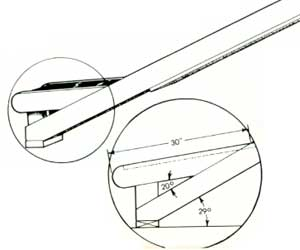

ILLUSTRATION BY DON OSBY
It may look like a big job, but this back-yard playground is within the abilities of most any would-be woodwright. Just be sure to site it and plan carefully before you touch saw to lumber!